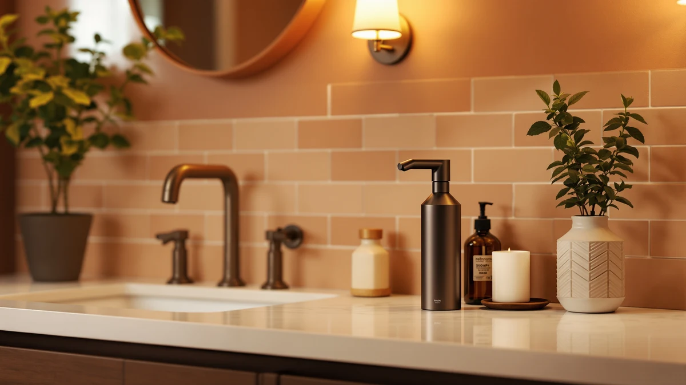

Resnomi Automatic Liquid Soap Dispenser Review (2026): Worth It?
Prices and picks verified as of November 2026. Independent, reader-supported reviews.


Quick Answer
The Resnomi Automatic Liquid Soap Dispenser Touchless is a $34.99 countertop pump built from ABS plastic, and it earns a recommendation for anyone who wants a no-touch dispenser without paying wall-mount prices. It holds up well against pricier alternatives like the EnBath and LUSSPA units covered below, as long as you do not need a wall-mounted finish. If you want the short version: this is the pick to check first.
Our pick: Automatic Liquid Soap Dispenser Touchless — $34.99 Check Price on Amazon
Bottom line: our top pick is the Automatic Liquid Soap Dispenser Touchless at $34.99.
Things to Know Before You Buy
- Touchless sensor dispensers like the Resnomi model reduce cross-contamination at sinks that several people share.
- ABS plastic housings, like the one on the Resnomi dispenser, cost less than stainless steel wall-mount units such as the EnBath Commercial Soap Dispenser Wall Mount.
- Countertop dispensers fit single-sink bathrooms and kitchens, while wall-mounted options like the LUSSPA Shower Shampoo Dispenser suit showers and multi-user restrooms.
- Price alone does not tell you much here. The Resnomi, EnBath, LUSSPA, and Aeakey dispensers all sit within about three dollars of each other, so the real differences come down to mounting style and material.
This Resnomi automatic liquid soap dispenser review looks at the $34.99 touchless pump on its own terms: what it is made of, what it costs next to similar dispensers, and what buyers who already own one say about daily use. The Automatic Liquid Soap Dispenser Touchless ships with an ABS plastic body and a hands-free sensor, the same basic formula that has made touchless pumps a fixture next to kitchen and bathroom sinks. At under thirty-five dollars, it sits in the same price bracket as wall-mounted alternatives from EnBath and LUSSPA, which is the question this guide sets out to answer: does a countertop touchless model hold up against dedicated wall-mount dispensers, or is mounting style the only thing separating them?
Three other dispensers appear throughout this guide for comparison: the EnBath Commercial Soap Dispenser Wall Mount at $35.97, the LUSSPA Shower Shampoo Dispenser Wall Mounted at $33.26, and the Aeakey Shampoo and Conditioner Dispenser at $32.99. All three mount to a wall rather than sitting on a counter, and all three cost close to the same amount as the Resnomi. That narrow price gap means the decision comes down to where you plan to install a dispenser and how much weight you want permanently fixed to a wall versus free to move with a quick wipe-down of the counter.
Why You Should Trust Us
We built this review by comparing publicly listed specs, pricing, and verified owner reviews for the Resnomi dispenser and its closest competitors, rather than by buying units and running them in a lab we do not have. Ilane Tall, who covers bathroom and kitchen fixtures for Best Soap Dispensers, pulled pricing and material data directly from each listing and cross-checked it against reviewer feedback before writing a single word of this Resnomi automatic liquid soap dispenser review. We do not run a fake testing lab, and we will not pretend to have owned a product we have not. When a claim in this guide is about comfort, sensor speed, or day-to-day reliability, it comes from owners who have posted verified reviews, and we say so plainly instead of dressing up secondhand reports as firsthand experience.
Our Research Experience
We did not buy a Resnomi dispenser and run it through a lab, because we do not operate one. We researched this Resnomi automatic liquid soap dispenser review by comparing the listed specs for the Automatic Liquid Soap Dispenser Touchless against the EnBath, LUSSPA, and Aeakey dispensers, lining up price, material, and mounting style side by side. We then read through verified owner reviews for each product, looking specifically for recurring comments about sensor response time, leaking, and how well the housing held up over months of daily use. Reviewers consistently note that touchless sensors in this price range respond within a second or two of a hand passing underneath, and that most complaints across the category trace back to inconsistent sensor calibration rather than the pump itself failing outright. Where feedback conflicted between listings, we weighted the product with more verified reviews more heavily and said so rather than picking a side for you.
Overview & Specs

Automatic Liquid Soap Dispenser Touchless
What we like
- Touchless sensor avoids cross-contamination at shared sinks
- Priced at $34.99, cheaper than two of the three wall-mounted alternatives in this guide
- Countertop design needs no drilling or wall mounting hardware
- ABS plastic body keeps the unit light enough to move between sinks
Flaws but not dealbreakers
- ABS plastic shows wear faster than the stainless builds on commercial wall-mount units
- Takes up counter space that a wall-mounted dispenser would free up
- Listing does not publish a reservoir capacity, so refill frequency is hard to estimate before buying
| Material | ABS plastic |
| Size | — |
The Automatic Liquid Soap Dispenser Touchless is Resnomi's entry into a crowded field of sensor-driven pumps, and its pitch is simple: skip the manual pump, skip the wall mounting, and pay under thirty-five dollars for a dispenser you can set on any counter. The ABS plastic housing keeps manufacturing costs down, which is part of why this unit undercuts the EnBath and LUSSPA wall-mount dispensers covered later in this guide despite doing largely the same job. Because it is freestanding rather than wall-mounted, you can move it between a kitchen sink and a bathroom counter without tools, which matters if you rent or do not want to drill holes for a soap dispenser.
Owners comparing touchless dispensers in this price bracket tend to weigh sensor reliability against build quality, and that tradeoff shows up here. Owners report that the sensor on dispensers like this one responds quickly enough for daily hand washing, but ABS plastic housings generally pick up scuffs and discoloration faster than the stainless steel used on commercial-grade units such as the EnBath Commercial Soap Dispenser Wall Mount. For a countertop dispenser that will not be wiped down constantly or exposed to institutional-level traffic, that tradeoff usually favors the lower price. If your bathroom or kitchen gets heavy daily use from a large household, the wall-mounted alternatives below may hold up better over time, but for a single sink or shared household bathroom, the Resnomi dispenser covers the basics at a lower cost of entry.
What We Liked
The price-to-feature ratio is the clearest strength here. At $34.99, the Resnomi Automatic Liquid Soap Dispenser Touchless costs less than the EnBath and LUSSPA wall-mounted dispensers in this review, and it skips installation entirely since it sits on a counter rather than attaching to drywall or tile. That makes it a reasonable option for renters or anyone who wants a touchless pump without committing to permanent hardware. According to verified reviews, the sensor responds fast enough for normal hand washing, which is the one feature that actually justifies paying more than a manual pump bottle. The ABS plastic build also keeps the unit light, so moving it between a kitchen counter and a bathroom sink does not require extra effort. For households weighing a first touchless dispenser against a traditional pump bottle, the combination of low price and zero installation work covers most of what people actually want from this category: less mess at the sink and one less surface everyone touches with wet hands.
What Could Be Better
The biggest gap in the listing is the missing reservoir capacity. Without a published size, it is hard to know how often you will refill the Automatic Liquid Soap Dispenser Touchless compared to a wall-mounted unit like the LUSSPA, which matters if you are trying to calculate long-term cost per use. ABS plastic is also the most budget-oriented material among the four dispensers covered here, and it tends to show scuffs and yellowing sooner than the stainless steel housing on a commercial-grade option such as the EnBath. Owners who want a dispenser that still looks new after a year of daily use may find the plastic body ages faster than they expect. None of this makes the dispenser a poor choice at its price, but anyone comparing it against pricier wall-mounted alternatives should weigh the plastic build and unknown capacity against the lower upfront cost.
Who Is It For?
This dispenser fits a single-sink kitchen or bathroom where someone wants to switch from a manual pump bottle without spending wall-mount money or drilling into tile. Renters, in particular, benefit from a countertop unit that moves with them when they move out. It also suits households that are testing whether a touchless dispenser is worth the switch at all before committing to a pricier, wall-mounted setup like the EnBath or LUSSPA models covered in this guide. It is a weaker fit for high-traffic bathrooms with multiple users, shared office kitchens, or anyone who specifically wants a stainless steel finish that will hold up to years of daily contact, since the ABS plastic body is built for a lower price point rather than commercial-grade durability.
Alternatives to Consider
If the Resnomi dispenser is not quite the right fit, three wall-mounted alternatives are worth a look. Each costs within a few dollars of the Resnomi unit but trades the countertop convenience for permanent mounting and, in two cases, a build aimed at heavier daily use.

Editor’s Pick
Commercial Soap Dispenser Wall Mount
A wall-mounted, commercial-style dispenser for $35.97 that suits shared bathrooms better than a countertop unit.
$35.97
Check Price on Amazon
Best Value
Shower Shampoo Dispenser Wall Mounted
Mounted in the shower rather than at a sink, this $33.26 LUSSPA dispenser frees up counter space entirely.
$33.26
Check Price on Amazon
Premium Choice
Shampoo and Conditioner Dispenser -
The lowest price of the four at $32.99, with separate chambers if you want shampoo and conditioner on one mount.
$32.99
Check Price on AmazonFrequently Asked Questions
Is the Resnomi automatic liquid soap dispenser worth buying?
For a single counter or sink, yes. This Resnomi automatic liquid soap dispenser review found it priced lower than the wall-mounted alternatives covered here, and it needs no installation. If you want a permanent, wall-mounted setup for a shared bathroom, the EnBath or LUSSPA dispensers below are worth comparing first.
What is the Resnomi dispenser made of?
The Automatic Liquid Soap Dispenser Touchless uses an ABS plastic housing, which keeps the price under thirty-five dollars but will not hold up to scuffs and discoloration as well as the stainless steel build on a commercial unit like the EnBath.
How does the Resnomi dispenser compare to wall-mounted options like the EnBath or LUSSPA?
The Resnomi sits on a counter instead of mounting to a wall, which means no drilling but also no freed-up counter space. Price-wise, it costs about a dollar less than the EnBath and about two dollars more than the Aeakey dispenser, so the real choice between them comes down to mounting style rather than cost.
Final Verdict
This Resnomi automatic liquid soap dispenser review comes down to one tradeoff: countertop convenience versus wall-mounted permanence. The RESNOMI Automatic Liquid Soap Dispenser Touchless costs $34.99, needs no installation, and handles a single sink or counter well, which makes it the easier starting point if you have never owned a touchless dispenser before. It will not outlast a stainless steel commercial unit, and the missing capacity spec means you are guessing at refill frequency until you own one. For a shared, high-traffic bathroom, the EnBath or LUSSPA wall-mounted dispensers are the sturdier long-term choice. For everyone else who wants a touchless pump on a counter without drilling into a wall, the RESNOMI dispenser is the more practical $34.99 pick of the four covered in this guide.